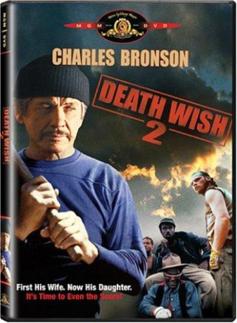
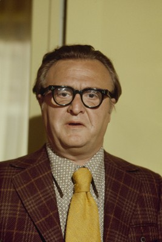
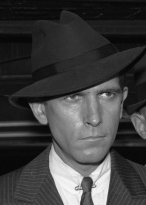
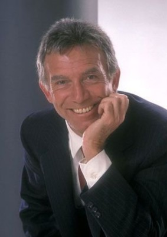
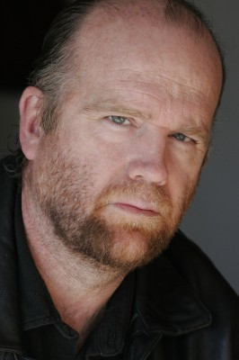
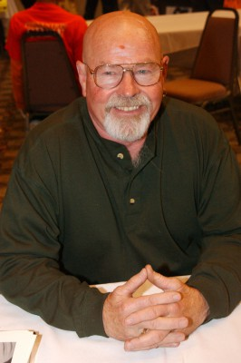
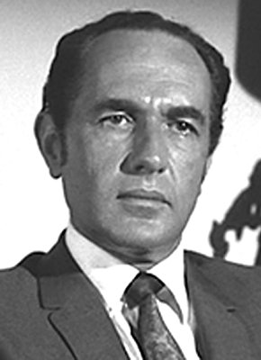

#4719 Der Death Wish 2 - Mann ohne Gnade
Alternativ: Death Wish II
 
 IMDB-Wertung: 6.0 / 10
IMDB-Wertung: 6.0 / 10  Metascore: 0
Metascore: 0 
Paul Kersey, the vigilante, now lives in LA with his daughter, who is still recovering from her attack. He also has a new woman in his life. One day while with them, Kersey is mugged by some punks, Kersey fights back, but they get away. The leader, wanting to get back at Kersey, goes to his house, but Kersey and his daughter Carol are not there. The muggers rape his housekeeper, and when Kersey and his daughter arrive, they knock him out and kidnap her. After they assault her, she leaps out of a window to her death. Kersey then grabs his gun and goes after them. When the LA authorities, deduce they have a vigilante, they decide to consult with New York, who had their vigilante problem. Now the New York officials, knowing that Kersey lives in LA, fears that he's back to his old habit. Fearing that Kersey, when caught will reveal that they let him go instead of prosecuting him send Inspector Ochoa to make sure that doesn't happen.
Jahr: 1982
Dauer: 81 Minuten
FSK: 18
Land: USA Studio: Filmways PicturesTonspuren: DD2.0 - ,
Untertitel:
Auflösung: 1080p (1920x1024) Größe: 4229 MB
Genre: Action, Thriller, Drama, Krimi
Regisseur: Michael Winner
Drehbuch: William J. Locke
Soundtrack:
Darsteller:
 Charles Bronson als Paul Kersey
Charles Bronson als Paul Kersey Jill Ireland als Geri Nichols
Jill Ireland als Geri Nichols-  Vincent Gardenia als Det. Frank Ochoa
-  J.D. Cannon als New York D.A.
-  Anthony Franciosa als Herman Baldwin
- Robin Sherwood als Carol Kersey
- Robert F. Lyons als Fred McKenzie
- Drew Snyder als Deputy Comm. Hawkins
-  Thomas F. Duffy als Nirvana
 Kevyn Major Howard als Stomper
Kevyn Major Howard als Stomper Laurence Fishburne als Cutter
Laurence Fishburne als Cutter- Hugh Warden als Minister
- Don Moss als Cabbie
-  Charles Cyphers als Donald Kay
- Don Dubbins als Mike
- Ezekiel Moss als Thug 2
- Ava Lazar als Girl in TV Soap Opera
- Henny Youngman als Himself - on TV
- Ben Frank als Inspector Lt. Mankiewicz
- Silvana Gallardo als Rosario
- Michael Prince als Elliott Cass
-  Paul Lambert als New York Police Comm.
- Stuart K. Robinson als Jiver
- E. Lamont Johnson als Punkcut
- Paul Comi als Senator McLean
- Frank Campanella als Judge Neil A. Lake
- Jim Begg als Tourist
- Melody Santangello als Tourist's Wife
- Robert Snively als Dr. Gofeld
- Steffen Zacharias als Dr. Clark
- Peter Pan als Chinese Landlord
- David Daniels als Lang
- Jim Galante als Tim Shaw
- Buck Young als Charles Pearce
- Karsen Lee als Nirvana's Girl 1
- Leslie Graves als Nirvana's Girl 2
- Teresa Baxter als Nurse 1
- Cindy Daly als Nurse 2
- Susannah Darrow als Nurse on Bus
- Henry Capps als Policeman 1
- Joshua Gallegos als Policeman 2
- Paul McCallum als Ambulance Man
- Roberta Collins als Woman at Party
- Diane Markoff als Prostitute
- Cynthia Burr als Secretary to NY DA
- Michael Tavon als Thug 1
- C. Ransom Walrod als Boat Captain
- Gary Boyle als Man in TV Soap Opera
- Fred Saxon als Newscaster
- Blair Farrington Group als Dance Group
Datei: X:\FSK18-Collections\Death Wish\Death Wish 2 - Mann ohne Gnade, Der (1982, FSK18, 1920x1024).mkv seit 08.11.2016
Festplatte: FSK18
 Es gibt insgesamt 9 Filme in der Gruppe 'FSK18-Collections\Death Wish'
Es gibt insgesamt 9 Filme in der Gruppe 'FSK18-Collections\Death Wish'